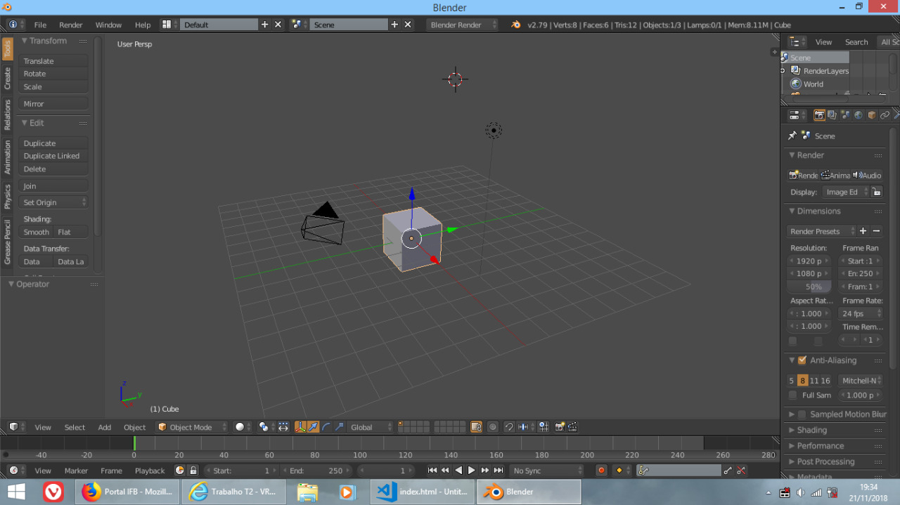

O VRML é uma linguagem que contém informações sobre como se criar objetos em três dimenões, e seu uso original era voltado para a Realidade Virtual, o compartilhamento de informações e de contado. Nesse trabalho, vamos abordar mais afundo sobre o dito cujo, sobre o seu funcionamento, sua estrutura, a modelagem 3d e abordagens no mundo. Mesmo sendo antigo, o VRML tem seu valor, por tratar de transformar conteúdo web em 3d.
O VRML (Virtual Reality Modeling Language) é uma linguagem que descreve objetos tridimensionais em uma Realidade Virtual para ser usada na world wide web, como páginas HTML são para com textos, então a proposta do VRML é criar um mundo virtual compartilhado, onde pontêncializaria a interação entre usuários, com um gráfico estruturado com a dimensão Z. Os usos do VRML poderiam ser para gráficos em 3D, entretenimento, páginas web interativa, manufatura, científico, engenharia e educação. O primeiro release do VRML foi criado pela Web3D Consortium, depois o VRML 2.0 foi lançado e, mais tarde, lançou o X3D, considerado o sucessor do VRML. O seu corpo de texto trás informações como vértices, materiais e texturas.
A modelagem dos objetos em 3D, a serem disponibilzados na página, fora feita no software de Modelagem 3D de código aberto Blender, ferramenta que apresenta a totalidade do pipeline 3D. Tal software apresenta conteúdo que pode ser adicionado, assim como exite um que permite exportar um modelo feito na ferramenta para o formato .wrl, que é a extensão do VRML.
Mesmo que o VRML seja uma linguagem ultrapassada, já que existe o seu sucessor, o X3D, os seus conceitos não deixam de ser interessantes, mesmo que hoje em dia temos outras ferramentas que são capazes de realizar tal feito. O VRML é uma linguagem que não consome muito processamento e pode ter bom rendimento, o bom uso das formas, sem extrapolar muito a poluição visual, pode ter um efeito bom e atrativo.
As aplicações do VRML podem se extender à gráficos que podem ajudar na visualização de dados, constriur figuras geométricas, construir objetos para a visualização antes de entrar em produção física, criar designs com mais facilidade, entre outrasdiversas aplicações. A ideia original do VRML era para ser usado em, assim como o html é, um ambiente onde se podia compartilhar informações e trocar hyperlinks, como uma página web é hoje em dia, onde se pode entrar em outros lugares ao clicar em links.
O ambiente do VRML são basicamente os browsers, os quais executam o código .wrl. Neles onde é feita a tradução do código em objetos manipuláveis. Porém, o arquivo .wrl deve ser tratado de forma apresentar corretamente.
O VRML define o formato do arquivo para ser integrado, a princípio, o arqui .wrl é baseado em tempo espaço 3D, contendo a os principais componentes que podem set modificados com uma variedade de mecanismos, permitindo composição, encaspulamento e extenções. A semântica do VRML descreve um comportamento funcional abstrato baseado em tempo, interatividade 3D e informações multimídia. Cada arquivo VRML, estabelece as coordenadas do espaço, para todos os objetos definidos no arquivo, as composições e conjuntos de objetos 3D, os comportamentos e especifica hyoerlinks para outros arquivos e aplicações. Por exemplo, um arquivo .wrl, com seu próprio sistema de coordenadas, pode conter referências a outros arquivos, as quais teram seus sistemas também, logo, o primeiro arquivo será o sistema de coordenadas global e os outros serão sistemas locais. Isso torna capaz a criação de mundos maiores e mais dinâmicos. A estrutura em si do VRML, começo com o Header, que facilita a identificação. O grafo de cena irá conter nós que descrevem os objetos e as propriedades. Cada nó tem um tipo, diferenciadores, eventos que envia ou recebe, implementação de como o objeto reage ao evento e o nome do nó. O nó Shape associa a geometria com nós que definem sua aparência, e esse nó e que define o resultado final do objeto. O Shape pode conter nós de formas prontas, como Box,Cone e Cylinder, nós de propriedade, como Coordinate, Color, Normal, e TextureCoordinate. O nó Appearance define a aparência o do objeto, dentro do Shape, sendo que pode ter o nós como Material, ImageTexture, PixelTexture, MovieTexture.
Executar o VRMl exige um browser que seja capacitado para suportar tal formato. Quando se pensava que o VRML iria ter proporções bem maiores do que se tem hoje em dia, areditava-se que todos os browsers iriam ser feitos com o VRML já embutido, o que nunca ocorreu. A fim de que o .wrl seja executado corretamente, deve-se baixar plugins que suportal tal aplicação. O plugin da Cortona3D provou-se um excelênte para tal tarefa, por isso a execução dos códigos faz-se necessário instalar o dito cujo. Nos arquivos provindênciados há um instalador, mas o arquivo pode ser baixado aqui. Vale lembrar que o este só funciona no Internet Explorer.
Um padrão do VRML básico é tal que: #VRML V2.0 utf8 # header que define a codificação Shape { # nó que começa a definição do objeto appearance Appearance { # definição da aparência material Material { # O tipo de material do objeto } } geometry IndexedFaceSet { # Começo dos vértices coord Coordinate { # Definição das coordenadas point [ ... ] # Aqui vão as coordenadas } colorPerVertex FALSE # ou (TRUE), irá definir se cada vértice terá uma cor ou uma cor por vértice color Color { # Começo da Definição de cores color [ ... ] # as cores colorIndex[ ... ] # indexadores de cores coordIndex[ ... ] # Coordenadas do indexadores } } }
O VRML, por mais que a seja uma excelênte ferramenta, teve sua acensão e derrocada. Durante seus anos promissores, uma das aplicações mais interessantes foi o uso do VRML em comerciais para criação de banners com uso em sites. Fora isso, o VRML não foi usado em muitas aplicações, apenas promessas. A ideia original do VRML era para ser usado como um espécie de chat virtual, onde as pessoas poderiam se encontrar numa realidade virtual, poder interagir entre si e com o ambiente.
Como primeiro experimento do VRML, fora feito a logo do Instituto Federal de Brasília. A princípio temos a tela inicial do software Blender 
O VRML, sem sombra de dúvidas, é deveras uma linguagem interessante, sendo capaz de integrar objetos tridimensionais à páginas web, o que as tornam bastante interativa. Os seus conceitos, mesmo que hoje em dia já seja empregado largamente, na época era algo fascinante. O projeto do VRML pode ter sido descontinuado, mas os seu sucessor ainda continua, e mais ferramentas ainda estao em desenvolvimento. Até o momento, trabalhar com o VRML não fora penoso, apesar de ter de instalar plugins para faze-lo funcionar, é bastante simples de modelar algum objeto em uma ferramenta de modelagem 3d, exporta-los e aplica-los em uma página web, já que hoje em dia temos computadores muitas vezes melhor dos da época, o processo de vizualização e manipulação tornam fáceis. Para fins educacionais, o VRML pode ser util, mas voltado para o mercado, o X3D seria uma opções melhor, sendo mais flexivel e ágil.
{kind=link}
{kind=link}
{kind=link}